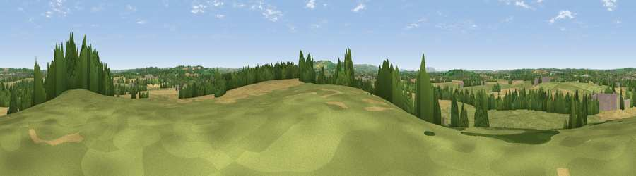

Viewpoint near Clifford Chambers
#30295 in England · top 60% of its area beats it · near Clifford ChambersWhere it is
The exact computed spot (SP 19225 51275). Click the marker for map links.
The view, rendered

A 360° render of this exact spot computed from the terrain model, tree cover and land cover — summer colours, afternoon light, calibrated against photographs of famous viewpoints. Real trees, hedges and buildings will differ in detail.
The panorama
Grey silhouette: terrain skyline in each direction (720 bearings, Earth curvature and refraction included). Dashed green: skyline with trees (+15 m) and buildings (+8 m) as obstacles. Blue strip: how far the ground is visible on each bearing.
Where the view opens
Wedge length = distance to the farthest visible ground on that bearing (vegetation-aware). Rings at 10, 25 and 50 km.
What fills the view
51% grassland · 34% cropland · 12% woodland · 4% built-up
Angular shares of the visible panorama (visual magnitude), not map area. Landscape diversity 0.47 (0–1 Shannon).
Key numbers
More beautiful places nearby
The staircase of upgrades: each row has a higher view potential than everything closer. Driving times are estimates from straight-line distance, calibrated against real road routing — check an actual route before setting out.
| Place | Direction | Drive | Score |
|---|---|---|---|
| Bordon Hill | NNW · 3 km | ~8 min | 59.0 |
| Viewpoint near Ettington | E · 6 km | ~13 min | 60.1 |
| Viewpoint near Meon Vale | SSW · 6 km | ~13 min | 77.0 |
| Broadway Hill | SSW · 17 km | ~30 min | 77.7 |
| Viewpoint near Elmley Castle | WSW · 25 km | ~40 min | 80.5 |
| Bredon Hill | WSW · 26 km | ~42 min | 83.0 |
| North Hill | W · 42 km | ~62 min | 86.8 |
| Worcestershire Beacon | W · 43 km | ~62 min | 87.1 |
52.15942, -1.72038 · source: screening · position refined by local search. Computed location — check access rights before visiting.